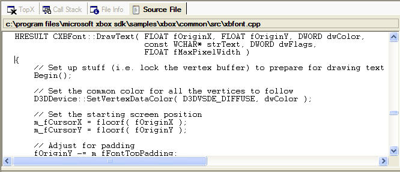

The Source File view shows the source code for the functions sampled during the profiling of an Xbox executable.

The Source File view is activated by doing one of the following:
If no function has been clicked upon in one of the other views, the Source File view will have a message indicating that no source file is loaded. The same message will also appear if no symbols or source file were located. If symbols were located and the source file was not found, an Open dialog box will appear that gives the user the chance to manually locate the source file.